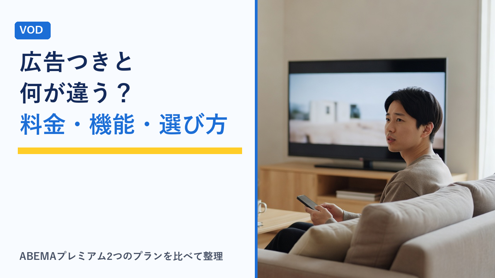

ABEMAプレミアムと広告つきプランの違い：料金・見られる範囲・どちらを選ぶかの考え方
更新日：2026-11-12

ABEMAの有料プランには、「ABEMAプレミアム」と「広告つきABEMAプレミアム」の2種類があります。名前が似ているうえ、どちらもプレミアム限定作品が見放題になるため、「安いほうで十分なのか」「何ができなくなるのか」が分かりにくいところです。この記事では、ABEMA公式ページの表示（2026年11月12日確認）をもとに、料金・広告・機能・同時視聴台数の違いと、どちらを選ぶかの考え方を客観的に整理します。
ABEMAの視聴方法は3段階ある
まず全体像です。ABEMAは登録や支払いをしなくても見られる範囲があり、その上に有料プランが2つ用意されています。
- 無料（プランなし）：番組表に沿ったリアルタイム配信や、一部の見逃し配信を広告つきで視聴できます。プレミアム限定の作品は見られません。
- 広告つきABEMAプレミアム：プレミアム限定作品が見放題になります。そのかわり広告が入り、一部の機能が使えません。
- ABEMAプレミアム：プレミアム限定作品が見放題で、広告なし（一部対象外あり）。追っかけ再生やダウンロードなどの機能がすべて使えます。
つまり2つの有料プランの違いは、見られる作品の範囲ではなく「広告の有無」と「使える機能」にあります。ABEMAプレミアムそのものの特徴や向いている人はABEMAプレミアムはどんな人におすすめ？で整理しています。
2つのプランの違いを比較表で確認
公式の料金ページに表示されている内容を表にまとめます（税込・月額）。
| 項目 | ABEMAプレミアム | 広告つきABEMAプレミアム |
|---|---|---|
| 月額料金 | 1,180円 | 680円 |
| プレミアム限定作品 | 見放題 | 見放題 |
| 広告 | なし（一部対象外あり） | あり |
| 放送中の追っかけ再生 | できる | できない |
| ダウンロード | できる | できない |
| 同時視聴できるデバイス | 2台 | 1台 |
差額は月500円、1年続けると6,000円です。公式ページには「広告つきABEMAプレミアムはABEMAプレミアム限定機能が利用できません」という注記があり、上の表で「できない」となっている項目がそれにあたります。なお、どちらのプランでも、作品によっては見放題とは別に追加購入が必要なものがあります。
見られる作品の範囲は同じ、違うのは「見え方」
広告つきプランでも、プレミアム限定作品は見放題の対象です。料金が安いからといって、見られるシリーズや話数が減るわけではありません。違いが出るのは次の点です。
- 再生の前や途中に広告が入る：見放題の作品を見るときにも広告が流れます。1話ずつ見る分には気になりにくくても、続けて何話も見ると広告の回数が積み重なります。
- 放送中の番組を最初から見られない：追っかけ再生が使えないため、放送開始に間に合わなかった番組は、その時点から見るか、配信が終わって見逃し配信になるのを待つ形になります。
- オフラインで見られない：ダウンロードができないため、視聴には常に通信が必要です。
ABEMAプレミアムでも広告が入る場面がある
「広告なし」のABEMAプレミアムにも例外があります。公式ページでは、リアルタイム配信や、テレビ朝日・ABCの見逃し作品など一部のコンテンツは広告なしの対象外と案内されています。
| 見るもの | ABEMAプレミアム | 広告つきABEMAプレミアム |
|---|---|---|
| プレミアム限定作品・見逃し配信（オンデマンド） | 広告なし | 広告あり |
| 番組表に沿ったリアルタイム配信 | 広告なしの対象外 | 広告あり |
| テレビ朝日・ABCの見逃し作品など一部コンテンツ | 広告なしの対象外 | 広告あり |
このため、リアルタイム配信を流し見することが中心の人は、上位プランにしても広告の体感があまり変わらない可能性があります。反対に、見逃し配信やプレミアム限定作品を自分の好きな時間にまとめて見る人ほど、広告なしの効果が大きくなります。
機能の違い3つを使う場面から考える
追っかけ再生：放送時間に間に合わないことが多いか
追っかけ再生は、放送中の番組を最初から再生できる機能です。スポーツや格闘技の中継、恋愛リアリティ番組の最新話のように、放送と同じ日に見たい番組があり、開始時刻に間に合わないことが多い人には影響が大きい機能です。放送後の見逃し配信で見れば足りる人にとっては、なくても困りにくい機能といえます（一部対象外のコンテンツがあります）。
ダウンロード：外出先で見るか、通信量に余裕があるか
ダウンロードは、作品を端末に保存してオフラインで見る機能です。通勤・通学の電車内や、帰省・旅行の移動中に見る人、スマホのデータ容量が少ないプランの人には重要になります。自宅のWi-Fiで見ることがほとんどなら、使う機会は多くありません。通信量の目安はVODの通信量はどれくらい？、ダウンロード機能の一般的な仕組みはVODの画質・ダウンロード機能を比較で整理しています。
同時視聴：家族と同じ時間に見るか
同時に再生できるデバイスは、ABEMAプレミアムが2台、広告つきが1台です。一人で使うなら1台で足りますが、家族と共有して別々の部屋で同じ時間帯に見る使い方では、1台だと片方が再生できなくなります。同時視聴の考え方は家族アカウント・同時視聴ルールまとめも参考になります。
月500円の差額をどう考えるか
使い方ごとに、どちらのプランが合いやすいかを整理します。当てはまる行が多いほうを目安にしてください。
| 使い方 | 合いやすいプラン | 理由 |
|---|---|---|
| 限定作品を見たいが、費用はできるだけ抑えたい | 広告つき | 見られる作品の範囲は同じで、月500円安い |
| 自宅のWi-Fiで、一人で見る | 広告つき | ダウンロードと2台同時視聴を使う場面が少ない |
| リアルタイム配信を流し見するのが中心 | 広告つき | リアルタイム配信は上位プランでも広告なしの対象外 |
| シリーズを何話も続けて見る | ABEMAプレミアム | 話数が多いほど広告の回数が積み重なる |
| 放送に間に合わない番組を、その日のうちに最初から見たい | ABEMAプレミアム | 追っかけ再生が使える |
| 通勤・移動中に見る、データ容量が少ない | ABEMAプレミアム | ダウンロードしてオフラインで見られる |
| 家族と別々の端末で同じ時間に見る | ABEMAプレミアム | 同時視聴が2台 |
迷う場合は、まず広告つきプランで始めて、足りない機能がはっきりしたら上位プランを検討するという順番も考えられます。その際は、プラン変更の手順や料金の扱いを先に確認しておくと安心です（後述）。
Disney+とのセットプランにも「広告つき」がある
ABEMAにはDisney+とのセットプランがあり、こちらもABEMA側が広告つきかどうかで料金が分かれています（税込・月額、2026年11月12日確認）。
| セットの内容 | ABEMAプレミアム | 広告つきABEMAプレミアム | 差額 |
|---|---|---|---|
| Disney+スタンダードとのセット | 1,860円 | 1,640円 | 220円 |
| Disney+プレミアムとのセット | 2,190円 | 2,000円 | 190円 |
単体契約では500円ある差額が、セットプランでは190〜220円に縮まります。Disney+も契約するつもりの人は、広告つきにして節約できる金額が小さくなる点を踏まえて判断することになります。なお、ディズニープラスの作品を見るにはディズニープラス側へのログインが必要で、すでにどちらかに登録している場合の注意事項が公式ページに案内されています。
申し込み前に確認しておきたいこと
- 申し込みの経路：Webから登録する場合と、アプリストア経由で登録する場合とで、選べるプランや支払い方法、解約する場所が異なることがあります。登録した経路は控えておきます。
- プラン変更の扱い：広告つきから広告なしへ（またはその逆へ）変更できるか、変更がいつ反映されるか、差額がどう請求されるかは、公式ヘルプで確認してから手続きします。
- 料金を支払うタイミング：次回の請求日を登録直後にアカウント画面で確認し、見直す日をカレンダーに入れておくと、惰性で続くのを防げます。
- 無料体験の有無：2026年11月12日時点の公式料金ページには、無料体験の表示は見当たりませんでした。キャンペーンは時期によって変わるため、申し込み時点の表示を確認してください。
- 追加購入が必要な作品：どちらのプランでも、見放題に含まれず別途購入が必要な作品があります。目当ての作品が見放題の対象かを作品ページで見ておきます。
解約の場所や忘れを防ぐ方法はVODサービスの解約忘れを防ぐコツと注意点まとめで、ほかのサービスも含めた年間の負担の比べ方はVODの月額料金を年間で比べるで整理しています。
選び方のポイント
- 見られる作品は同じ、と押さえる：2つのプランの差は作品の範囲ではなく、広告と機能です。「見たい作品が見られるか」ではなく「どう見たいか」で選びます。
- 見方が「まとめ見」か「流し見」かを考える：オンデマンドでまとめて見るなら広告なしの効果が大きく、リアルタイム配信が中心なら差が出にくくなります。
- ダウンロードが必要かを先に決める：外出先で見る予定があるか、スマホのデータ容量に余裕があるかで、ほぼ判断がつきます。
- 使う人数を数える：同じ時間に2台で見る場面があるなら、広告つきの1台では足りません。
- 差額は年額で見る：月500円は年6,000円です。追っかけ再生・ダウンロード・2台視聴・広告なしの4点にその金額を払う価値があるかで考えます。
- Disney+も見るならセットの差額で比べる：セットプランでは差額が190〜220円に縮まるため、上位プランを選びやすくなります。
よくある質問
広告つきABEMAプレミアムだと、見られない作品はありますか？
公式ページでは、広告つきABEMAプレミアムでも「ABEMAプレミアム限定作品が見放題」と案内されており、見放題の範囲に差は設けられていません。違いは広告が入ること、放送中の追っかけ再生とダウンロードができないこと、同時視聴が1台であることです。なお、どちらのプランでも、見放題に含まれず追加購入が必要な作品があります。
ABEMAプレミアムにすれば、広告はまったく出なくなりますか？
すべてではありません。公式ページでは、リアルタイム配信や、テレビ朝日・ABCの見逃し作品など一部のコンテンツは広告なしの対象外と案内されています。広告なしの効果が大きいのは、プレミアム限定作品や見逃し配信を好きな時間に再生する見方です。リアルタイム配信が中心の場合は、上位プランにしても広告の入り方があまり変わらないことがあります。
広告つきプランは、無料で見るのと何が違いますか？
無料の範囲では、プレミアム限定作品を見ることができません。広告つきABEMAプレミアムは月額680円で、広告は入るものの、プレミアム限定作品が見放題になります。「限定作品は見たいが、広告は気にならず、ダウンロードや追っかけ再生も使わない」という場合に合うプランです。リアルタイム配信を放送時間どおりに見るだけなら、無料の範囲で足りる場合もあります。